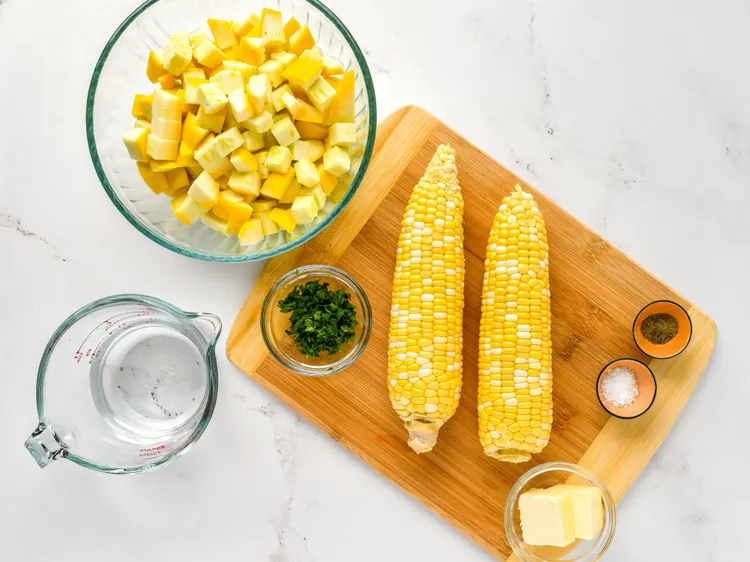

Use summer squash and leftover corn on the cob to make this pretty side dish that's super tasty.
10 mins
25 mins
35 mins
4
Gather all ingredients

Place corn into a large pot and cover with salted water; bring to a boil.
Reduce the heat to medium-low and simmer until tender, 10 to 15 minutes. Drain and set asde to cool.
While the corn is cooling, place squash into and add water. Cook over the medium heat until tender,
5 to 10 minutes. Drain any excess under the skillet.
Cut kernels off the cobs. Stir corn, butter, parsley, salt and pepper into squash;
cook, stirring occasionally, until heated through, about 5 minutes
Calories
Fat
Carbs
Protein